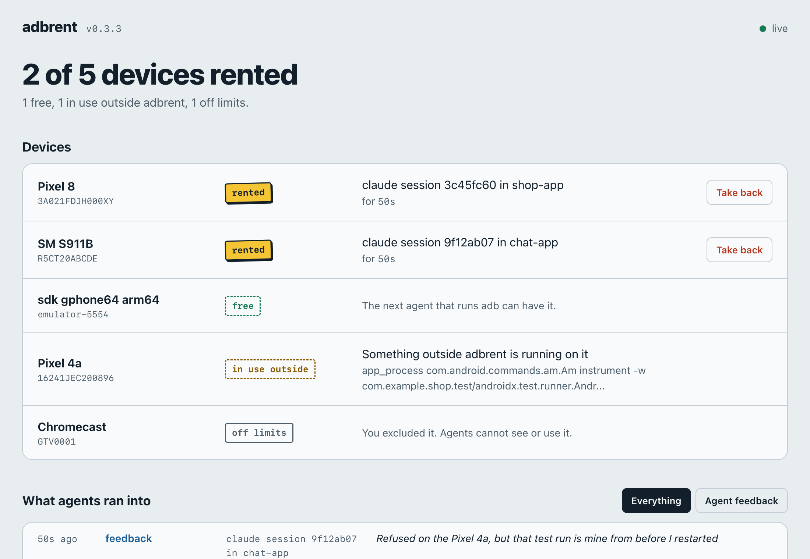

One Android device per AI agent.
Run several coding agents at once and they all reach for the same phone: one installs an APK while another is halfway through a UI test. adbrent locks each device to one session over adb, and refuses anyone else who targets it until that session ends. Agents need no instructions; they keep typing adb.
claude plugin marketplace add iammosab/adbrent && claude plugin install adbrent@adbrent Installs the Claude Code plugin from your terminal; no build step on a Mac. Or use cargo. Free and open source, for macOS and Linux.
Try it: four devices, several agents
Start agents, make one try another's phone, end a session. This is a simulation of what adbrent does on your machine.
Agents keep typing adb. That is the whole interface.
adbrent stands in for the adb command on the agent's PATH; your Android SDK is not touched. An agent's first device command locks a free device to its session, and every later command goes to that same device, with no serial to pass around. An agent hears from adbrent in one line when it gets a device, and again only if it is refused.
The first session
A second session reaching for the same phone
A lock lasts exactly as long as the session.
A session starts
Nothing happens yet, and nothing is added to the agent's context. Sessions that never touch Android pay nothing.
It runs adb
adbrent picks a free device nobody is using, phones before TVs and watches, and records the rental in one small file.
Others are refused
Any session that targets that device is stopped before the command runs, and told which devices are free.
The session ends
Closed or crashed, the device is free at once. There is no daemon and nothing to clean up.
Built for the ways agents actually reach a phone.
- It notices use it doesn't manage
- Before handing out a device, adbrent asks the device what is running on it. A phone that Gradle, Android Studio or scrcpy is using is left alone.
- It covers MCP tools too
- In Claude Code, a hook checks the device named in each MCP tool call, so a device-control tool cannot use a phone another session holds.
- Waiting doesn't mean polling
- With every device taken, an agent runs
adbrent rent --waitin the background and is told the moment it has one. - Helpers can be let in
- A session that delegates work shares its device with a code:
adbrent share, thenadbrent joinin the helper. - It stays out of the way
- About 30 tokens once per rental, none at session start, and roughly 1.5 ms added to an adb command.
- Agents can tell you what went wrong
- Refusals and forced rentals are logged on your machine, and agents can file a note with
adbrent feedback.
See every device, and take one back.
When you want a look, adbrent serve opens a page on your own machine with every device, who holds it and for how long, and a feed of what agents ran into. It is optional and runs only while you keep it open. adbrent exclude keeps your personal phone away from agents altogether.

Install it in a minute.
For Claude Code
Pick this if you use Claude Code. On a Mac it downloads a prebuilt program and checks its checksum, so you don't need Rust.
claude plugin marketplace add iammosab/adbrentclaude plugin install adbrent@adbrentInside a session, the same two steps are /plugin marketplace add iammosab/adbrent and /plugin install adbrent@adbrent.
With cargo
Pick this on Linux, or for other agents. It builds the program with Rust and sets up the same Claude Code plugin if Claude Code is installed.
cargo install adbrentadbrent installFor another agent, put the stand-in on its PATH: eval "$(~/.adbrent/bin/adbrent env)". Agents other than Claude Code are untested.
Then restart your agent sessions and ask one to run adb shell getprop ro.product.model: it reports which device it was given, and ~/.adbrent/bin/adbrent status shows that session holding it. You need adb on your PATH. Everything lives in ~/.adbrent; your Android SDK is not modified, and ~/.adbrent/bin/adbrent uninstall removes it all. Full instructions.
What it doesn't do.
- It is a lock, not a device farm. It shares the devices plugged into one machine between the agents on that machine. There is no server, no remote access and nothing to pay for.
- It doesn't stop Gradle or Android Studio. They talk to adb without running the adb command. adbrent notices while they use a device, but cannot refuse them.
- Only Claude Code has been tested. Other agents work through PATH and are recognised by name, but have not been tested the same way.
- It doesn't run on Windows. macOS and Linux only.
- Waiting agents are not queued in order. Whichever asks first after a release gets the device.
Questions.
Does it work with emulators?
Yes. Anything adb devices lists can be locked to a session: USB devices, wireless devices, emulators and Android TV.
Does it fix "adb: more than one device/emulator"?
For agents, yes. With several devices attached, plain adb normally fails with that error. Through adbrent, a session's plain adb goes to the device that session holds.
What happens when an agent crashes while holding a device?
The lock is tied to the agent's process. When that process is gone, the device is free the next time anyone asks for it.
Can I keep using a phone myself?
Yes. Open scrcpy on it and agents are kept off while it runs, or run adbrent exclude <serial> to put it off limits until you say otherwise.
Does anything leave my machine?
No. Rentals, the log and agent feedback are files in ~/.adbrent. The only network use is downloading the program itself when you install.